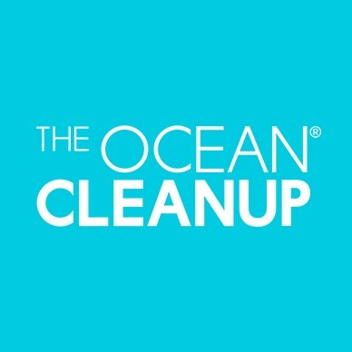
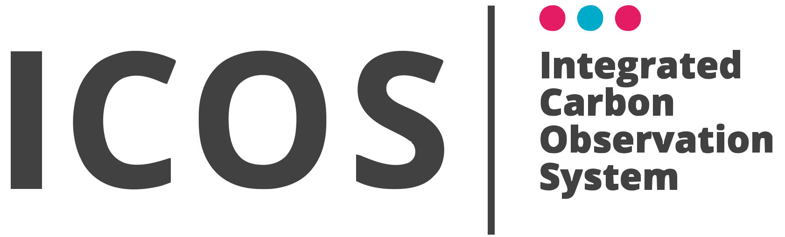

Developpement of a Python program for flux data processing
3-month research internship at Lund University (Sweden)
Read Case Study →
Engineering apprentice in fluid mechanics, energetics and environment at ENSEEIHT.
Flood study engineer – information systems (GIS and data) at the Service Central Vigicrues (French flood forecasting service).
Engineering projects using the Class 4 method
3-month research internship at Lund University (Sweden)
Read Case Study →
I am planning to choose the Water and Environmental Sciences.
After my studies, I would like to continue working on water-related topics, but I'm not yet sure which specific field I want to focus on. Discussing with Mamadou helped me understand the role of the Water Agencies in managing this resource and the various aspects of their work—particularly the importance of dialogue with water stakeholders. He also showed me with examples that you don't need to know everythig at the end of your studies and that you can still learn a lot during your career.
During this meeting, Jean-Yves explained what are are the advantages that big companies like EDF offer : an important diversity of jobs, the trainings and the possiblity of working abroad. He himself held six different positions at EDF over his career, ranging from operations management to human resources, through risk management.
I'm interested in doing an internship in a research laboratory or a company based in Europe. After discussing this with my mentor at SCV, I believe the best time for me would be at the end of M1 during the summer. I also contacted human ressources to have information about the administrative procedures.

The Ocean Cleanup is a company that has been extracting, and monitoring plastic pollution in oceans and rivers globally for over ten years. Their Science & Technology department in Rotterdam, develops both technologies that are used on the field and IT tools for modelising plastic fluxes in rivers. I have contacted three people that did an internship on this topic to have their feedback and gain more information on the content of their work. Compatibility : Subjects like Python programming and development of GIS tools are also at the center of my work as an apprentice.
Their Department's of Atmospheric and Cryospheric Sciences studies are focused on weather forecasting, mountain meteorology, earth atmosphere interactions and ice-climate relations. Working in these topics would allow me to discover new fields of sciences that are still linked to my apprenticeship, namely weather forecasting and climate change.

Détails et articulation avec l'apprentissage.
Mountain hiking is one of my favorite activities because it combines sports and spending time in nature.
Originally, I'm mostly fond of landscapes and wildlife photography, but I recently opened myself up to other areas, as mentioned below.
I've been practising this sport for 9 years. I enjoy it because like all endurance sports, it teaches one to be resilient.
The goal of IngéPLUS is to support students with technical diplomas interested in pursuing engineering studies. The role of the mentors is to share their experiences regarding training, finding an apprenticeship, and their knowledge of the professional world.
Capitole du Libre is a public event promoting free-software that takes place at ENSEEIHT. I took part in this event as a member of the Photo7 student association and I was in charge of taking photos of the people, stands and conferences.